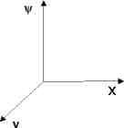

Es werden 2 Ansätze zur Bahnplanung vorgestellt. Der Unterschied liegt in der Art und Weise, wie die Hindernisse berücksichtigt werden. Der erste Ansatz ist wohl der anschaulichere: Bahnplanung im Arbeitsraum. Die folgende Abbildung zeigt die Bahn und die überstrichene Fläche.
Bahnplanung im Arbeitsraum
Bei dieser Bahnplanung müssen die gesamten Abmaße des Fahzeugs berücksichtigt werden. Sinnvoller wäre es wenn nur die Bahn eines Punktes (Trajektorie) berücksichtigt werden muß. Diese Bahnplanung geschieht im Konfigurationsraum. Die x,y Ebene wird durch eine weitere Größe den Gierwinkel Psi erweitert.
| Arbeitsraum | Konfigurationsraum |
|---|---|
|  |
Die Hindernisse werden um die Fahrzeugabmasse vergrößert.
Die Bahn wird als Trajektorie, die sich im 3 dimesionalen Raum bewegt, dargestellt. Die Hinderisse sind auch 3 dimensionale Objekte.
Es wurden beide Bahnplanungsverfahren verwedet. Eine heuristische Bahnplanung mit festgelegten Manöver hat eine Kollisionsdetektion im Arbeitsraum. Führte dieser Ansatz nicht zum Erfolg, wurde ein anderer Suchansatz im Konfigurationsraum verwendet.